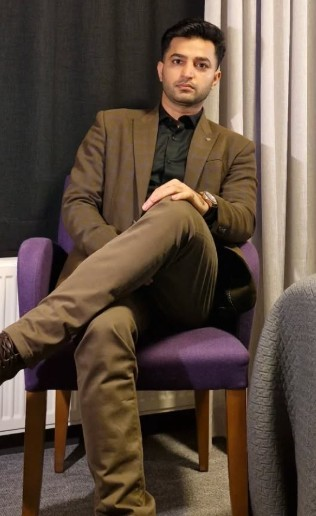

Furqan Rustam
I work at the intersection of Cybersecurity, Artificial Intelligence, and Online Safety.
I am currently pursuing my Ph.D. at University College Dublin, where my research focuses on using intelligent systems to detect harmful online behavior, strengthen digital security, and build safer online environments.

About Me
Hello! I’m Furqan Rustam, a researcher, educator, and technology enthusiast originally from Pakistan. My academic and professional work is centered on understanding how modern computing can be used to solve real-world security and data-driven problems.
My main focus is Cybersecurity, especially the use of Machine Learning and Natural Language Processing to improve online safety. I am interested in detecting harmful digital behavior, analyzing large-scale online data, and developing intelligent systems that can help protect users in digital spaces.
Alongside my research, I am actively involved in teaching, mentoring, and guiding students in computer science, data science, machine learning, and cybersecurity-related topics. I also work as a freelance professional, contributing to technical writing and machine learning projects.
Research Interests
My research combines cybersecurity and artificial intelligence to create practical solutions for safer and more trustworthy digital systems.
Education
Ph.D. in Computer Science
University College Dublin, Ireland
Research focus: Cybersecurity, online safety, machine learning, and NLP.
Computer Science Background
Built a strong foundation in programming, algorithms, data systems, machine learning, and applied computing.
Experience
Researcher
Working on AI-driven approaches for safer digital communication and cybersecurity-focused applications.
Educator & Mentor
Teaching and supervising students in computer science, machine learning, text mining, data structures, algorithms, and related fields.
Freelance Technical Professional
Providing technical writing and machine learning project support on Fiverr.
Portfolio
My portfolio includes research, teaching, freelance technical work, datasets, machine learning projects, and cybersecurity-focused applications.
Cybersecurity Research
Research on online abuse detection, harmful content analysis, and intelligent systems for safer digital environments.
Machine Learning Projects
Applied ML and deep learning projects involving classification, prediction, sentiment analysis, and text mining.
Datasets & Codes
Research datasets and code resources related to cybersecurity, sentiment analysis, online communication, and AI.
Teaching & Supervision
Teaching computer science courses and supervising student research projects in AI, data science, and computing.
Technical Writing
Freelance writing on technology, machine learning, AI, and research-based computing topics.
Media & Vlogs
Videos and media content related to education, technology, travel, and informational topics.
Technical Skills
Research & AI
Cybersecurity
Honors & Awards
Level 2 Seller — Fiverr
Recognized for consistent freelance performance, client satisfaction, and quality delivery in technical writing and machine learning-related work.
Academic Research Contributions
Contributed to research in cybersecurity, machine learning, NLP, and online safety.
Teaching & Student Supervision
Supervised and guided students on research and applied computing projects.
Contact
I am open to research collaboration, academic discussion, cybersecurity projects, technical writing, and machine learning-related work.
Email: furqan.rustam1@gmail.com
Links: Google Scholar | LinkedIn | GitHub | Kaggle